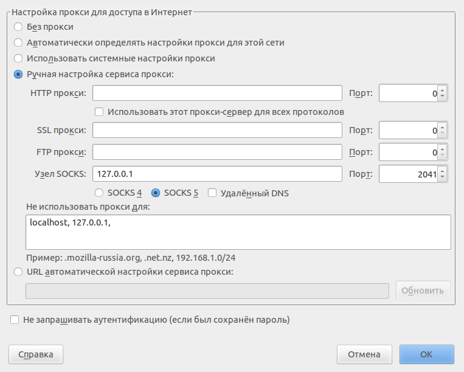
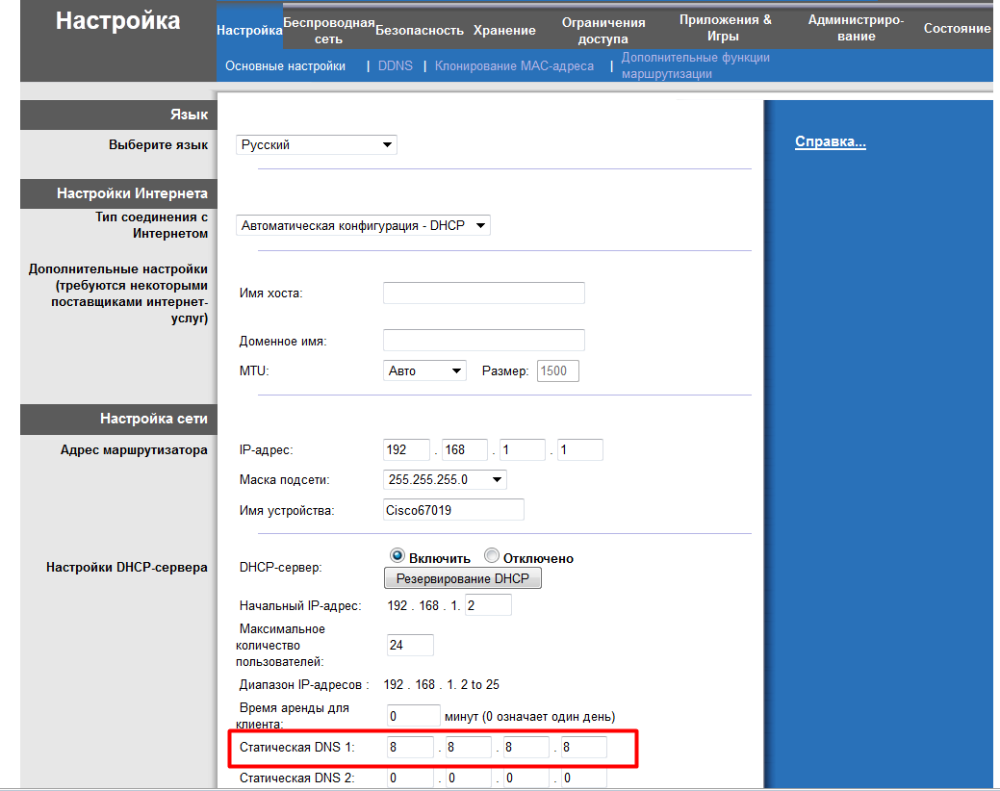
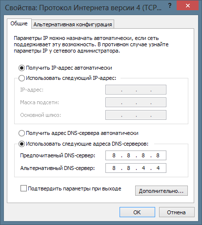

Статья с официального форума
Друзья!
9 ноября 2015 г. стало известно, что по решению российских властей (Мосгорсудом удовлетворен иск издательства "Эксмо") Рутрекер будет заблокирован для российских пользователей "навечно", с использованием недавно появившейся в законодательстве РФ процедуры "пожизненной блокировки сайтов".
Нельзя сказать, что это решение стало для нас неожиданностью - мы предполагали подобное развитие событий и заранее предложили нашим пользователям сделать выбор между возможной блокировкой и удалением раздач по требованию правообладателей.
Большинство из вас проголосовало против массового удаления раздач.
Таким образом, если решение суда не будет отменено или опротестовано (на что мы тоже надеемся), то провайдеров обяжут закрыть доступ на Рутрекер для всех, кто находится на территории Российской Федерации. Приходится лишь сожалеть, что все наши многолетние усилия по поиску консенсуса между пользователями и правообладателями оказались напрасны.
В связи с этим мы создали для вас два новых раздела на нашем форуме:
Кроме этого настоятельно рекомендуем вам скачать БАЗУ РАЗДАЧ РУТРЕКЕРА. Она размером всего 4.7 Гб и в ней собраны все раздачи Рутрекера! С помощью несложных утилит (которые, надеюсь, появятся в ближайшее время) из неё можно будет восстановить magnet-ссылку на любую раздачу и скачать её. Магнет-ссылку также можно создать и вручную, с помощью несложных манипуляций. Как это сделать - можно почитать по ссылке Хеш-сумма и магнет-ссылки
Практически единственная организация, которая отстаивает свободу интернета в Российской Федерации - это Роскомсвобода. По ее данным в России закрыли доступ уже к более чем 1 миллиону сайтов. Для того чтобы получить доступ к заблокированным ресурсам, Роскомсвобода запустила проект OpenRunet.org, позволяющий настроить доступ на заблокированные сайты через стандартные функции браузеров Chrome, Opera, Firefox, а также их мобильные версии и Яндекс-браузер.
Далее перечислены основные способы технического решения вышеозвученной проблемы
Способы доступа к неправомерно заблокированным ресурсам
Можно выделить несколько групп инструментов:
Безопасность в сети
Перед тем, как настраивать доступ к неправомерно заблокированным ресурсам, настоятельно рекомендуется отключить в браузере технологию WebRTC. Что это такое?
WebRTC (англ. real-time communications — коммуникации в реальном времени) — проект с открытым исходным кодом, предназначенный для организации передачи потоковых данных между браузерами или другими поддерживающими его приложениями по технологии точка-точка.
Опасность заключается в том, что будет виден ваш НАСТОЯЩИЙ ip адрес всем веб-ресурсам, несмотря на то, что вы используете vpn и будет уже не важно, vpn какой страны у вас, поскольку WebRTC выдаст ваш настоящий ip.
Как проверить, включён ли у вас WebRTC или нет? Достаточно зайти на сайт:
https://www.browserleaks.com/webrtc или https://diafygi.github.io/webrtc-ips/
Если вы сейчас используете vpn и у вас включен WebRTC, то будет видно два ip. Один ip вашего vpn, другой – вашей сетевой карты. Если же у вас отключён WebRTC, то будет виден только один ip.
Часто можно услышать такую отговорку:
WebRTC НЕ представляет никакой угрозы. Все за NATом сидят.
Да, будет виден не ваш IP, а IP провайдера. Но не стоит забывать, что в рамках СОРМ провайдер обязан сохранять логи в течении полугода. И людям в погонах при этом даже не нужно направлять запросы провайдерам, ибо в ФСБ и отделах "К" стоят терминалы прямого доступа к СОРМ.
Вот пример. ЗАО "Норси-Транс" выпускает спецоборудование "Анти-Nat".
"Anti-NAT" - аппаратно-программный комплекс, предназначенный для обработки информации об оказанных абонентам оператора услугах связи, а также определения внутреннего адреса абонента. "Anti-NAT" разработан в соответствии с Постановлением Правительства РФ № 538 от 27 августа 2005 года "Об Утверждении Правил взаимодействия операторов связи с уполномоченными государственными органами, осуществляющими оперативно-разыскную деятельность".
Подробности: http://www.norsi-trans.ru/pdetail/anti-nat/
С подачи президента Медведева, милицию у нас переименовали в полицию, тем самым сказав народу, что у нас теперь полицейское государство. Поэтому не пренебрегайте безопасностью, чтобы к вам не постучались полицаи, как к Ленину в Шушенском сто лет назад.
Плагины для браузеров
Доступ к неправомерно заблокированным ресурсам возможен через следующие плагины:
Ищем по названию, устанавливаем, и закрытые сайты становятся доступными. Например, плагин FriGate просто устанавливается с сайта Mozilla, Firefox перезапускается и все начинает работать. Ничего сложного.
А так же не забывайте про Турбо-режим в браузерах Opera и Chrome. Он может помочь.
VPN-сервисы
Покупаем или находим бесплатный VPN-хостинг. На нем настраиваем VPN-туннель.
VPS/VDS - виртуальный или выделенный сервер
Виртуальный/выделенный сервер можно использовать как VPN-туннель, а можно пробросить и SSH-туннелирование. Проще сего это делать на Linux.
На локальной Linux-машине следуетвыполнить:
ssh -D 2041 username@yourVdsServer.com -f -N
где:
В настройках браузера указать SOCS-5 Proxy на порту 2041:

То есть, создается SSH-туннель до вашего Vds/Vps сервера с именем yourVdsServer.com, и все запросы браузера будут направленны в туннель.
Так же стоит посмотреть в сторону программ proxfilter или proxychains.
TOR, I2P, ONION и другие распределенные сети
Устанавливаем TOR-браузер (что проще) или непоседственно сервис TOR (что сложнее). TOR - это медленная технология, поэтому имеет смысл использвать два браузера - обычный для простой навигации в сети Интернет и TOR - браузер для доступа к неправомерно заблокированным ресурсам.
Да, работать с двумя браузерами неудобно. Но многие уже поняли, что по-другому никак. Нас вынуждают говорить не то что думаем, и думать не то, что говорим (c) Кин-дза-дза. И это положение вещей уже нашло отражение в компьютерном мире.
Либо переходим в так называемый darknet - используем I2P или ONION.
Обход блокировок на мобильных устройствах
Андроид
пример включения режима в Chrome
iOS
Еще способы:
Другие способы
Использование сторонних DNS
Способ несложный, но поможет только в том случае, если провайдер использует подмену адреса блокированного ресурса в своём DNS-сервере. Например перенаправляет ваш запрос на страницу-заглушку или вообще на другой сайт. В этом случае можно использовать один из открытых DNS-серверов. Например DNS Гугла или OpenDNS.
Недостаток метода - у вас могут быть проблемы с доступом к локальным ресурсам провайдера (если такие есть).
Проще всего это сделать, если вы подключены через модем или роутер.
Зайдите в настройки вашего роутера через веб-интерфейс и пропишите там один из открытых DNS (список ниже). Примерно так:

При прямом подключении к провайдеру - пропишите открытые DNS сервера в настройках вашего сетевого подключения (настройка протокола IPv4 ):

Примеры публичных DNS
Доступ через точку в адресе
В конце доменного адреса добаваляем точку:
rutracker.org./forum/viewforum.php?f=1960
работает и для других многих сайтов.
Доступ с помощью браузера Comodo Dragon
Браузер Comodo Dragon (не путать с Comodo IceDragon) — браузер на базе свободного проекта Chromium с дополнительными функциями, повышающими безопасность и конфиденциальность (из википедии). При установке можно выбрать альтернативный DNS от комодо, который позволит получать доступ к заблокированным сайтам. Ссылка:
https://www.comodo.com/home/browsers-toolbars/browser.php
Плюс браузера в том, что подходят плагины от Google Chrome